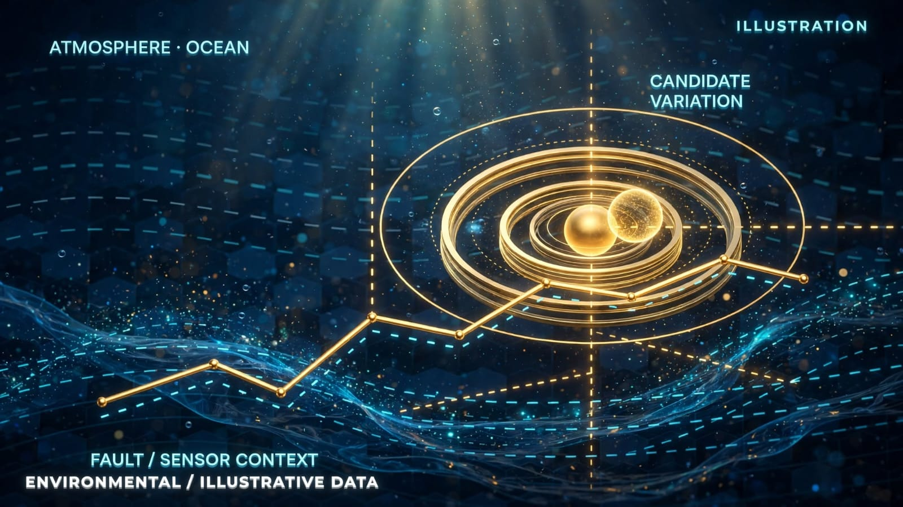

Taupō, Ōkataina, Tarawera and Whakaari
The planned NZ programme compares quiet and unrest periods while preserving site monitoring gaps, region-specific tectonic signals and observational limitations.
.jpeg) PYTHOLOGY
PYTHOLOGYEarthquake-catalogue and volcanic-context research tests what may change before an event, what remains ordinary, and which retrospective patterns fail under revised data and controls.
Research context and evidence records · illustrations are conceptual, not measurements.

The public independent shadow scanner examines earthquake-catalogue patterns around tectonic and volcanic-context locations. It does not represent an earthquake or eruption prediction, continuous seismometer feed or globally complete volcano sensor network.
Known historical events were used to evaluate geological screening rules. A multi-signal spatial cell is not an independently confirmed predicted earthquake.
| Historical event | Multi-signal spatial cells | What the evaluation revealed |
|---|---|---|
| Christchurch · 22 Feb 2011 | 5 of 33 | The early classification survived inclusion of revised GeoNet data, but changed in geographic extent and duration. |
| Kaikōura · 14 Nov 2016 | 3 of 31 | The previously reported near-epicentral signal did not survive the updated catalogue. |
| Fiordland · 15 Jul 2009 | 4 of 33 | The earliest regional classification was distant from the eventual mainshock. |
The initial eruption-selected analyses screened seismic catalogues around regions known to have erupted. They did not include a validated continuous network of volcanic gas, deformation, thermal or tremor observations.
| Eruption case | Multi-signal cells | Important qualification |
|---|---|---|
| Nabro · 12–13 Jun 2011 | 4 of 49 | The central cell did not qualify. The first reported regional multi-signal classification was approximately 2.5 hours before a literature-inferred onset, not a prospective prediction. |
| Whakaari · 9 Dec 2019 | 25 of 49 | The central cell did not qualify; many classifications arose across the wider Bay of Plenty. |
| La Palma · 19 Sep 2021 | 9 of 49 | The overlapping cells were not independent. The earliest regional classification was around seven days before eruption in an event-selected replay. |
The planned NZ programme compares quiet and unrest periods while preserving site monitoring gaps, region-specific tectonic signals and observational limitations.
Historical eruption inventories, official volcanic notices and nearby earthquakes are different source families. Geographic proximity is not evidence of volcanic causation.
The late-September to early-October 2026 regional replay contained anomalous intervals, but no cell satisfied the stricter multi-signal condition. It is a preserved non-detection, not a formally matched quiet-region control and certainly not proof that the area was safe.
Preserve code, thresholds, source availability, negative scans and event-independent observation windows.
Use quiet-period controls, event-free volcano comparisons, source outages and actual information availability, followed by independent prospective verification.
Bring a question, data source, technical challenge or potential research collaboration. We distinguish operational systems from exploratory studies and independently validated results.